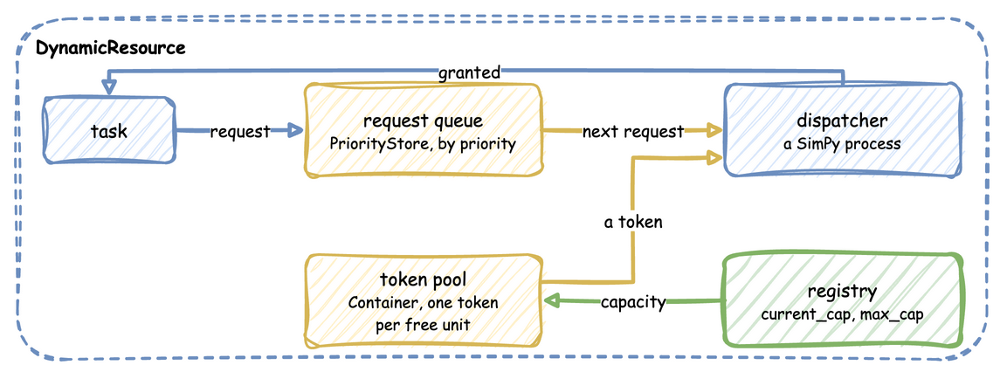
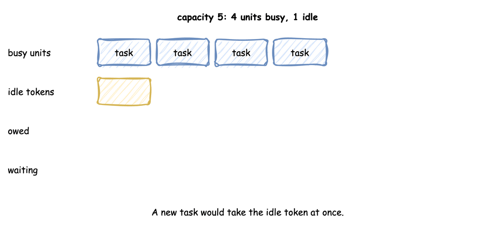
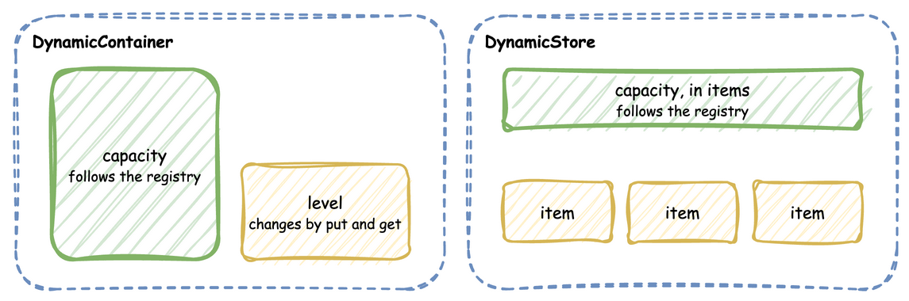

Resources: DynamicResource, DynamicContainer and DynamicStore
Standard SimPy objects are static. Dynamic DES wraps SimPy objects so their capacity follows the registry in real time.
Discrete Resources (DynamicResource)
DynamicResource is built from a SimPy PriorityStore request queue and a Container token pool, and represents discrete assets that process individual tasks (such as packers, packing benches or loading bays).
A task's request waits in the queue. The dispatcher takes the next request by priority, waits for a token from the pool, and grants it; the registry decides how many tokens the pool may hold:

packers = DynamicResource(env, "Shop", "packers") # capacity from the registry: 2
def order(env, order_id, priority=1):
with packers.request(priority=priority) as request: # a lower number goes first
yield request # waits until a unit is free
yield env.timeout(10.0) # holds the unit for 10 s
# leaving the with block releases the unit
Shrinking Safety Guarantee
When capacity increases, tokens are immediately added to the pool. When capacity shrinks (for example, from 5 packers to 2 when three go on a break):
* If 4 packers are currently packing orders, Dynamic DES will not terminate active processes.
* Idle tokens leave the pool at once. The units still busy above the new capacity are owed: while tokens are owed, each released token is discarded instead of returning to the pool.
* No waiting task starts until the busy units are within the new capacity (2). in_use counts the busy units, so it can be above capacity until they finish.
* A capacity raised again before the owed tokens arrive first cancels them, then adds any remaining difference to the pool.
The animation steps through a drop from 5 to 2 with 4 units busy:

def breakdown(env):
"""Takes 3 of 5 packers off the floor at t=5 s. Orders being packed are not stopped."""
env.registry.update("Shop.resources.packers.max_cap", 5)
env.registry.update("Shop.resources.packers.current_cap", 5)
yield env.timeout(5.0)
env.registry.update("Shop.resources.packers.current_cap", 2)
yield env.timeout(0.1) # the resource applies the change in its own process
print(
f"capacity {packers.capacity}, in use {packers.in_use}"
) # capacity 2, in use 4
Continuous Containers (DynamicContainer)
DynamicContainer wraps a SimPy Container and represents continuous quantities (such as a stock of boxes, a battery charge level, or concept drift).
- Capacity: The size limit of the container, such as the shelf space for boxes. It follows the registry.
- Level: The current fluid level or quantity of material. It changes only through
putandget.
boxes = DynamicContainer(env, "Shop", "boxes", init=80.0) # 80 of 100 boxes
def cool(env):
yield boxes.get(5.0) # takes 5 boxes, waiting if fewer are left
yield boxes.put(5.0) # puts them back, waiting if the tank is full
print(f"boxes level {boxes.level}")
Dynamic Stores (DynamicStore)
DynamicStore wraps a SimPy Store, or a PriorityStore when priorities are needed, and represents item-based collections (such as warehouses, buffer areas, or order books).
A container holds a quantity up to its capacity, and a store holds items up to its capacity. Both capacities follow the registry:

goods = DynamicStore(env, "Shop", "dispatch") # at most 50 items
def pack(env, order_id):
yield goods.put({"order_id": order_id}) # waits while the store is full
item = yield goods.get() # waits while the store is empty
print(f"shipped {item['order_id']}")
SimPy and Dynamic DES
SimPy's Resource, Container and Store take their capacity when they are created and keep it: the capacity property has no setter, so assigning a new value raises AttributeError (checked with SimPy 4.1.1). A SimPy model whose capacity changes, such as packers going on a break, has to model it some other way, such as a process that holds the resource.
Dynamic DES builds each one from SimPy parts and lets the capacity follow the registry. DynamicResource keeps requests in a SimPy PriorityStore and free units as tokens in a SimPy Container, and a dispatcher process gives tokens to requests; a change of capacity adds tokens, or removes idle ones at once and the rest as busy units finish. DynamicContainer and DynamicStore wrap SimPy's Container and Store and apply a new capacity in the same way. The request, put and get calls are SimPy's, so code written for SimPy resources works unchanged.
Creating Them
SimulationContext.run() creates a DynamicResource for every add_resource. It does not create containers or stores: add_container registers the capacity paths only. A process that needs a container builds it from the registered paths. DynamicContainer and DynamicStore are imported from dynamic_des, like DynamicResource. Stores have no builder method; register them with SimParameter(stores=...) on the low-level API.
from dynamic_des import DynamicContainer, SimulationContext
# run() creates the packers; the container is only registered
app = (
SimulationContext(sim_id="Shop")
.add_resource("packers", current_cap=2, max_cap=5)
.add_container("box_stock", current_cap=100.0, max_cap=500.0)
)
def restock(context):
# The container reads its capacity from Shop.containers.box_stock
stock = DynamicContainer(context.env, "Shop", "box_stock", init=50.0)
while True:
yield context.env.timeout(10.0)
yield stock.put(25.0)
context.publish("box_stock.level", stock.level)
app.add_process(restock)